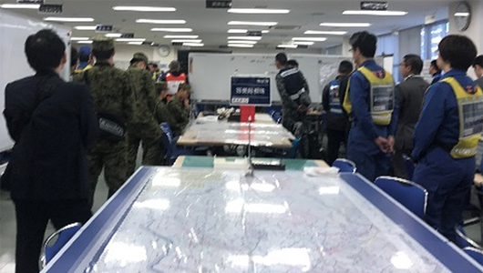

第10回九都県市合同防災訓練・図上訓練参加報告
首都圏での大規模災害に備え、図上訓練に参加しました

1月21日（火）9時より、埼玉県危機管理防災センターで開催された第10回九都県市合同防災訓練・図上訓練に、埼玉県生協連として参加しました。
首都圏における大規模な災害発生に備えて実施したもので、当日は、設定された災害状況、被害状況にもとづき、情報収集や救助活動、物資調達などのシミュレーションを行いました。埼玉県生協連は、埼玉県災害対策本部に2人、事務所内1人の職員が待機して訓練に参加し、あわせて埼玉県からの物資発注への対応訓練を行いました。
[災害設定・被害想定]
- 発災時刻
- 1月20日（月）16時00分 震源 東京23区内 首都直下地震
- 地震の規模
- マグニチュード7.3 震源の深さ 27Km
- 震度
- 埼玉県南部は6弱～6強 避難者数 43,452人（埼玉県）
- 帰宅困難者
- 約63万人
1．訓練内容
- 訓練は、災害状況・被災状況に応じて必要な対応を進めるプレイヤー（埼玉県職員中止）と、プレーヤーに指示を与えるとともに、プレーヤーからの発信を受けて、物資手配や輸送、救急救命のシミュレーションをするコントローラーに分かれて行われました。
- 埼玉県生協連から参加した2人は、コントローラーとして参加しました。実施時間の中でプレーヤーに2件の指示を出す役割を担うとともに、プレーヤーからの問合せに応えました。また、埼玉県生協連事務所に待機する職員は、物資提供の依頼があった場合に、対策本部にいる職員からの発信を受けて、模擬的に会員生協へ対応に関する訓練を行いました。
- 今回の訓練の中では、プレーヤーから次の問合せがあり対応しました。
| 時間 | 内容 | 部署 |
|---|---|---|
| 10時20分 | 調達可能な物資の調査依頼 | 物流オペレーション部 |
| 11時15分 | 毛布手配の依頼 | 物流オペレーション部 |
| 13時55分 | 2L飲料水のケースに関する情報提供依頼 | 物流オペレーション部 |
| 14時25分 | 2L飲料水の輸送ができるか問合せ | 物流オペレーション部 |
| 14時45分 | 2L飲料水の正式発注FAX受信 | 物流オペレーション部 |
※上記以外に、コントローラーとして2件の指示を発信しました。
2．訓練を受けて今後の課題
- (1) 今回は日本生協連の｢全国BCP（第5版）｣を参考に、調達可能な物資のリストを作成しましたが、災害に備えて実際に調達できる可能性がある商品、その商品の荷姿や大きさのリストを会員生協とともに作成、メンテナンスすることが必要であると考えます。災害対策書の見直しとともに検討を行います。あわせて、会員生協の施設や備蓄資源などを、地図上でどこに何があるか具体的に把握する必要性を認識しました。
- (2) 次年度の図上訓練には、埼玉県の訓練にあわせて独自に物資調達に関する図上訓練を実施することについて、検討を行います。